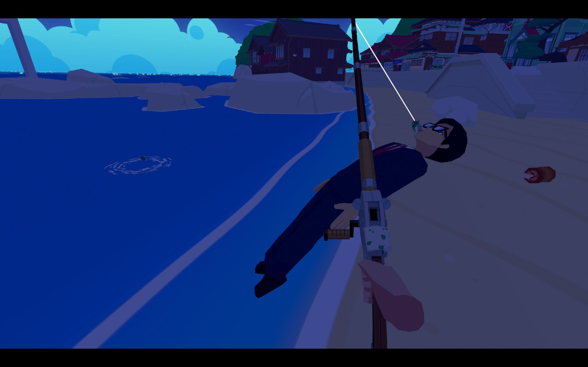

1game1week - Week 41 (10/8/25) - Sushi Ben
Hey all! It's week 40! (10/8 -> 10/15)
I was sick this past week... Wasn't really anything dramatic, but I had to take a sick day on Friday to rest. While the typical answer to sick days would just be "cough cough *ps5 beep* cough cough", I actually did sleep most of the day to rest. I'm feeling better now, after taking various electrolyte-filled drinks and downing quite a lot of generic-brand Dayquil.
The active ingredient in it seemed to be Acetaminophen, so I guess I'll develop autism soon. ...Or, would my future children have autism?
Unfortunately I'm probably not 100% there still, but I'll probably be fine pretty soon anyways.
Anyways!
New games from 10/1 -> 10/7:
Sonic Racing: CrossWorlds (PC)
Currently, my backlog is at +9 (lower is better, -1 from last week).
And onto 1g1w. Once again, a game is considered "beaten" if I've accomplished the main objective of the game.
GAME: Sushi Ben
PLATFORM: PC (Steam Deck)
GENRE: Adventure
STARTED ON: 9/18
BEATEN ON: 10/2
TOTAL PLAYTIME: 8 hours and 58 minutes
I've been following along with Sushi Ben for a while. It's been in development quite a while and seeing posts online was honestly really cool. From online posts, you can really see the love, charm, and dedication put into this game. It's got a stellar voice cast, a phenomenal soundtrack, a stunningly beautiful aesthetic and art direction, and a "vibe" that truly would make it something special coming out from the indie scene.
Sushi Ben is not a AAA title, nor is it the highest-budget title, nor is it charging you an arm and a leg in a time where you have various things against you, such as corporations wanting a bigger paycheck, or rising development costs (this includes stuff like hiring a voice cast. This game features both English AND Japanese voices!), scope creep (like, making this game playable completely without VR, since it was originally meant to be a VR-only title). You might be asking yourself, "why all the preamble?".
I want to love this game, so incredibly badly. I want to give props to every single person involved in the making of this game, and I want to acknowledge that they're actively working on the game to perfect it and make their vision come true. And I want to make it clear: this game, truly, had it all, and I'm looking forward to the day where it all can come into fruition and bring about the ultimate Sushi Ben experience. However, as of right now, the game just isn't finished and coming to realize that was an incredibly disappointing gut punch.
With these posts, I typically try to highlight "what's good about this game?" before complaining to the void. I really want to reiterate that this game is stacked with great points. It has a fun and engaging story about moving to a new town, Kotobuki-cho, and restoring a failing sushi shop, Daruma Sushi, to its former glory by helping the sushi chef Ben fight land sharks trying to make Kotobuki-cho into a tourist resort. The story isn't complicated or overly serious. Its tone is very light-hearted, even when it comes to the land shark antagonists. Its characters are really likeable and didn't truly fall into random tropes.
Its presentation is stunning, blending its first-person POV with something akin to manga panels in a visually beautiful world.
All this said, the story seems like it wants to take a backseat to the various different things you can do in Kotobuki-cho (although they are unlocked by going through the story) such as fishing, archery, ping pong, bug catching, taking pictures... which are activities that blend really well with VR, but to a lesser extent with traditional controls like on a Steam Deck. I wonder how different the experience is?
The game's not afraid to be silly. There's plenty of random silly stuff it'll both get you to do, or is part of the aforementioned "various different things". With fishing, for example, you can fish up one of the land sharks', Minami's, personal foot stools, who are just generic-looking office workers wearing a suit, tie, and big glasses. You can similarly fish up a white shark, which was really cool to see. Something that kind of irked me, however, is that fishing outside of when the story tells you to is pointless other than for the pure joy of digitally fishing and placing a large model of a fish on the beach somewhere.
I'm obviously not a game designer, but it really would've been great to add something akin to an inventory system where you can place various different fish, or bugs, or whatever. Currently, you only have your right hand to carry stuff around. When it is needed for story-related missions, you also get to use Hyakumaru, your frog Tsukumogami companion, as a sort of bottomless bag. For example, if I need a particular fish, when I close out of the fishing rod and have the fish in my hand, I can give it to Hyakumaru and have my hand free to continue.
I hate to be that guy that says "look at what this other game does", but I think it would've benefitted greatly from something like what Animal Crossing does. Maybe to a lesser extent. Say, for example: if I were to fish up a shark, take it to Ben, he'd say, "oh, wow! Let's make some sushi out of this!", and have it become a menu item, or something similar. It would work in theory similarly to Animal Crossing's museum, where you have various different fish on display that you've fished up. For a completionist, or just someone who enjoys the fishing minigame, this would add a nice incentive to try the minigame, even if it's not really what the story's asking you to do- which is something the game tries to encourage you do!
This could also be passed on to other characters with different gimmicks or requests, like Kei, who really likes bugs, or Taka, who's really into photography, saying something like, "take a picture of this!" etc.
Also- if I'm fishing up a shark, I would really expect some reaction when taking it to our sushi chef Ben or our fisherwoman friend, Junko. Outside of the story, I found that there was very few ways to actually interact with the characters, which was really sad. Sushi Ben gave me the impression that it was a game about a local town coming together with you, the protagonist, rallying the troops. I understand it being out of scope to have out-of-story interactions outside of sidequests given, such as fetch quests or easter egg hunts, but it's nonetheless a little disappointing. Lack of interaction outside the story isn't just for the two characters I mentioned. Unfortunately, there's really not a lot going on with the other characters outside of things such as fetch quests, easter egg hunts, etc. Botan, for example, refuses to really say anything unless you've collected 10 of her missing Daruma dolls, which are hidden away in places around Kotobuki-cho or behind another character's side quest. Once again, if I want to point to what another game does, the Persona series would probably be my pick with something like a social link system. It would really be amazing to be able to experience more of these characters, or see other personality traits. Botan, for example, is revealed to be a huge metal fan. That's awesome! I wanna learn more about that!

So far, something I've neglected talking about is that this game is unfortunately filled to the brim with bugs. They range in severity. Some are humorous and add to the silly aspect. That shark I mentioned having caught was flying away into the distance not too long after. Why? I don't know. But it was funny, and it added to it feeling like a cozy 4-koma manga like Nichijou where random nonsensical stuff happened.
There are, however, some decently annoying bugs that either halt progression or force you to reload the game. The biggest one at the top of my mind is the following clip. This particular cutscene is meant to play right outside the home of one of the characters. For some reason, it just triggered right when I walked out of Daruma Sushi to find the objective. I had no idea where this was, so I had to reload the game, find it, and trigger the cutscene again. Please note this is the only one I have footage of / remember, but it is absolutely not the only time I was softlocked or had a random trigger occur where they shouldn't.
I'm unsure if it's a bug, but every time that the game booted, Hyakumaru would mention that he had no idea what we were currently in the middle of doing, and to check the map for info. I'm assuming this is supposed to be a refresher mechanic on the current quest. It would've been pretty useful, but it either seems broken or has no actual current quest detection so it's unable to work (in which case, why have it for the final release?).
Outside of bugs, minor quirks that I found annoying was that the walk speed was a little bit slow. I think a sprint button would work wonders. You can use a warp / point-and-teleport function to go by a little faster, but it almost ruins the vibe to just warp around.
During the course of the game's story, you will borrow various items from NPCs like a fishing rod, or bug net before getting your own. The game itself, through Hyakumaru, tells you to go return these things to be polite to the person who lent them to you. However, the game doesn't actually let you do this. For example: you borrow the bug net, you use it for what you borrowed it for, the game tells you "you should remember to return it!", but you can't. It isn't until later in the story, when you need something else from the character in question, that the game lets you return the bug net to her... which oddly enough felt very antithetical to what it's trying to get me to do.
Also, the game itself becomes a little tedious, though I can't blame it too much. Think of it this way: villain-of-the-week anime, except it's a customer or some random person you have to help with something to then invite them out for sushi.
Like I said. I can't blame it. It's part of the genre, and meeting new people was really sweet. To be fair to it, it also isn't like the things that you have to do for the new characters are repetitive- it just becomes a story pacing issue.
There's also minor typos, including but not limited to ones like the one below, or stuff like missing a space after a comma, or mistyped words. The town's name is Kotobuki, not Fubuki, so I'm unsure how this even happened. Either that, or I missed part of the story somewhere during this quest (not an impossibility)
Finally: the story is unfinished. At what feels like the ending of the first act, the story stops completely and a text box flatly says "the story is over for now!". Issues weren't resolved, story wasn't finished, evil land sharks weren't "defeated" (or reformed and made into friends). It just... stops.
This may not be the game's fault, necessarily. Budget might've been used up. Deadlines might have needed to be hit. It's just really unfortunate that we're just leaving it like this.
My final verdict is that unfortunately Sushi Ben was simply not ready for release. It needed more time in the oven, it needed more playtesting, it needed more proofreading, and it needed the story to not end halfway through.
From the bottom of my heart: devs, you did a phenomenal job with what you have thus far and I can feel the love and passion you have for both this game, these characters, and this genre through the game and how far you've gone with it. I truly want to love this game. It just needs more time. I'm truly looking forward to what Sushi Ben cooks up in the future... please just make sure that it's not raw. Although that's probably a bad saying, since it's sushi.

Thanks for reading! If you need to contact me for any reason, please feel free to email me at aru@hoshikawa-aru.com.